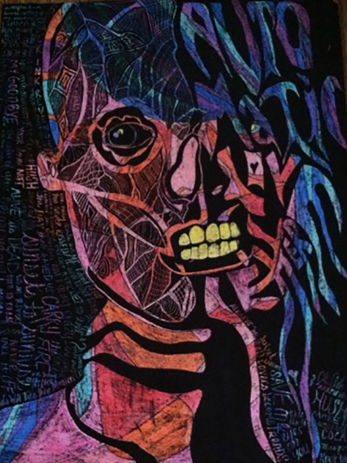

On days when I'm really stressed, I love to experiment with types of art that I've never done. It’s exciting to create works of art in new ways. When I struggle with coming up with ideas, I usually go to Pinterest.

A crayon etching is something I’ve tried a few times, and I find it enjoyable. In order to create a crayon etching, you will need paper, crayons, India ink (this is the one I used), a paintbrush and something to scratch the ink off of the paper afterwards. I have found that using poster board is more efficient as it is thicker than paper. First, crayon is drawn very heavily on the paper; the paper should be coated with wax from the crayon. Next, cover the paper with India ink using a paintbrush. Once the ink is dry, scratch a design into the India ink to display the color from the crayon underneath.
Here is a photo of a crayon etching I did of Juliet Simms for her former band Automatic Loveletter. In crayon, I drew a portrait of the singer. I chose reds, oranges and pinks for the skin colors. For the hair, I chose greens, blues and purples. Next, I painted over the crayon with India ink using a sponge brush. I then scraped the ink away from the piece using a paperclip and my fingernails. I scratched away the shape of a skull, and tried to make the face look like the flesh was exposed. This is to show that even with all of the struggles Juliet faced, she snarled at the music industry, and used Pledge Music to fund her next album without a label. Lyrics are also scratched into the edges to form the hair and shoulder.
After seeing the piece on social media, Juliet posted the artwork on her Instagram.
Cum sociis natoque penatibus et magnis dis parturient montes, nascetur ridiculus mus. Aenean eu leo quam. Pellentesque ornare sem lacinia quam venenatis vestibulum. Sed posuere consectetur est at lobortis. Cras mattis consectetur purus sit amet fermentum.
Curabitur blandit tempus porttitor. Nullam quis risus eget urna mollis ornare vel eu leo. Nullam id dolor id nibh ultricies vehicula ut id elit.
Etiam porta sem malesuada magna mollis euismod. Cras mattis consectetur purus sit amet fermentum. Aenean lacinia bibendum nulla sed consectetur.
Vivamus sagittis lacus vel augue laoreet rutrum faucibus dolor auctor. Duis mollis, est non commodo luctus, nisi erat porttitor ligula, eget lacinia odio sem nec elit. Morbi leo risus, porta ac consectetur ac, vestibulum at eros.

Hey guys! I'm Colton. I'm a college student studying Electronic Media. This consumes most of my time. However, in the little spare time that I do have, I enjoy drawing and painting.